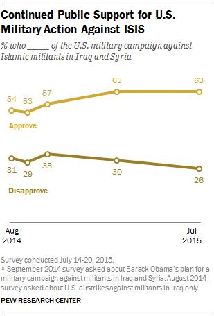

Keep it simple he said! Choose the most simple path to success. they said. I was working on an agentic pipeline for question-answering task on metrics dataset. And they suggested to dump the time series data into LLM context, which my opinion was a bad approach. Dumping floats in prompt - will confuse the model.
So in this tutorial, we’ll explore an alternative approach of this problem. We’ll fine tune a Vision Language Model (Gemma3) for Visual Questiona Answering on Chart Data. We’ll be using Huggingface family of libraries.
Install dependencies
First thing first let’s get the base libraries, and we are going to do this guide in pytorch. To install it:
!pip install -qq torch torchvision torchaudioOkay, so we are going to need transformers, datasets, bitsandbytes, peft, accelerate library. Let’s first install all of them
!pip install -U -qq transformers trl datasets bitsandbytes peft accelerateLoad Dataset
Now that we are done installing all the dependencies, it’s time to load our dataset. ChartQA dataset is available on Huggingface and we can use the dataset package to install it.
ChartQA is a dataset of of various graphs and corresponding question-answer pairs. It’s a good enough challenge for our model to test visual-question answering capabilities.
Since we are aiming to build a chatbot, we would need to format our dataset to chat schema. I’ve already crafted a system prompt which looks like this -
system_prompt="""You are a Vision Language Model that understands and
interprets chart images. Your job is to look at the chart and answer
questions with short, clear responses—usually a single word, number,
or brief phrase. The charts may be line charts, bar charts, pie charts,
or others, and can include colors, labels, legends, and text. Focus on
giving accurate answers based only on what is shown in the image.
Do not explain your answer unless the question needs it to make sense.
"""And referring to chat template described in the model cardand our formatting function looks like this -
def format_data(sample):
return [
{
"role": "system",
"content": [{"type": "text", "text": system_message}],
},
{
"role": "user",
"content": [
{
"type": "image",
"image": sample["image"],
},
{
"type": "text",
"text": sample["query"],
},
],
},
{
"role": "assistant",
"content": [{"type": "text", "text": sample["label"][0]}],
},
]Since this guide is compute intensive, we’ll load a small percentage of our dataset (15%) for each split. However you should fine-tune on full dataset for real world use cases.
from datasets import load_dataset
train_dataset, eval_dataset, test_dataset = load_dataset(
"HuggingFaceM4/ChartQA",
split=["train[:10%]", "val[:10%]", "test[:10%]"]
)Now, let’s format the data using the chatbot structure.
train_dataset = [format_data(sample) for sample in train_dataset]
eval_dataset = [format_data(sample) for sample in eval_dataset]
test_dataset = [format_data(sample) for sample in test_dataset]
{kind=link}
import torch
from transformers import AutoProcessor, Gemma3ForConditionalGeneration
model = Gemma3ForConditionalGeneration.from_pretrained(
"google/gemma-3-4b-it",
device_map="auto",
torch_dtype=torch.bfloat16
)
processor = AutoProcessor.from_pretrained("google/gemma-3-4b-it")Now, let’s create a method that takes a model, processor and sample as inputs to generate the model’s answer. This will allow us to streamline the inference and easily evaluate VLM.
def generate_text_from_sample(model, processor, sample, max_new_tokens=1024, device="cuda"):
# Prepare the text input by applying the chat template
text_input = processor.apply_chat_template(
sample[1:2], add_generation_prompt=True # Use the sample without the system message
)
image_inputs = []
image = sample[1]["content"][0]["image"]
if image.mode != "RGB":
image = image.convert("RGB")
image_inputs.append([image])
# Prepare the inputs for the model
model_inputs = processor(
# text=[text_input],
text=text_input,
images=image_inputs,
return_tensors="pt",
).to(
device
) # Move inputs to the specified device
# Generate text with the model
generated_ids = model.generate(**model_inputs, max_new_tokens=max_new_tokens)
# Trim the generated ids to remove the input ids
trimmed_generated_ids = [out_ids[len(in_ids) :] for in_ids, out_ids in zip(model_inputs.input_ids, generated_ids)]
# Decode the output text
output_text = processor.batch_decode(
trimmed_generated_ids, skip_special_tokens=True, clean_up_tokenization_spaces=False
)
return output_text[0]We can test our model’s current performance on chartqa dataset as following:
output = generate_text_from_sample(model, processor, train_dataset[0])
outputWhile the model successfully retrieves the correct visual information, it struggles to answer the question accurately. This indicates that fine-tuning might be the key to enhancing its performance. Let’s proceed with the fine-tuning process!
Fine Tuning using TRL
Four billion parameter is still a lot, if you have a low end hardware and you want to fine-tune a model. So in that case, instead of going for a full fine-tune, we will go for a QLoRA.
QLoRA
QLoRA enables efficient fine-tuning of large language models while significantly reducing the memory footprint compared to traditional methods. Unlike standard LoRA, which reduces memory usage by applying a low-rank approximation, QLoRA takes it a step further by quantizing the weights of the LoRA adapters. This leads to even lower memory requirements and improved training efficiency, making it an excellent choice for optimizing our model’s performance without sacrificing quality.
Loading Quantized model
For that first we’ll have to load our model in quantized format. We will be using bitsandbytes library for this.
from transformers import BitsAndBytesConfig
bits_and_bytes_config = BitsAndBytesConfig(
load_in_4bit=True,
bnb_4bit_use_double_quant=True,
bnb_4bit_quant_type="nf4",
bnb_4bit_compute_dtype=torch.bfloat16
)
model = Gemma3ForConditionalGeneration.from_pretrained(
"google/gemma-3-4b-it",
device_map="auto",
torch_dtype=torch.bfloat16,
quantization_config=bits_and_bytes_config
)
processor = AutoProcessor.from_pretrained("google/gemma-3-4b-it")Set Up QLoRA and SFTConfig
from peft import LoraConfig, get_peft_model
peft_config = LoraConfig(
lora_alpha=16,
lora_dropout=0.05,
r=8,
bias="none",
target_module=['q_proj', 'v_proj'],
task_type="CAUSAL_LM"
)
peft_model = get_peft_model(model, peft_config)Now it’s time for supervised fine-tuning of our model, which allows us to help the model learn to generate more accurate responses based on input recieved. We are going to use TRL library by Huggingface.
from trl import SFTConfig
# Configure training arguments
training_args = SFTConfig(
output_dir="gemma3-instruct-trl-sft-ChartQA", # Directory to save the model
num_train_epochs=3,
per_device_train_batch_size=4,
per_device_eval_batch_size=4,
gradient_accumulation_steps=8,
gradient_checkpointing=True,
# Optimizer and scheduler settings
optim="adamw_torch_fused",
learning_rate=2e-4,
lr_scheduler_type="constant", # Type of learning rate scheduler
# Logging and evaluation
logging_steps=10,
eval_steps=10,
eval_strategy="steps",
save_strategy="steps",
save_steps=20,
metric_for_best_model="eval_loss",
greater_is_better=False,
load_best_model_at_end=True,
# Mixed precision and gradient settings
bf16=True,
tf32=True,
max_grad_norm=0.3,
warmup_ratio=0.03,
# Hub and reporting
push_to_hub=True,
report_to="wandb",
# Gradient checkpointing settings
gradient_checkpointing_kwargs={"use_reentrant": False},
# Dataset configuration
dataset_text_field="", # Text field in dataset
dataset_kwargs={"skip_prepare_dataset": True}
)
training_args.remove_unused_columns = FalseWrite something about parameters in above parameters
Before we move ahead, We need to define a collator function to properly retrieve and batch the data during the training procedure. This function will handle the formatting of our dataset inputs, ensuring they are correctly structured for the model. Let’s define the collator function below.
image_token_id = processor.tokenizer.additional_special_tokens_ids[
processor.tokenizer.additional_special_tokens.index("<image>")
]
def collate_fn(examples):
texts = [processor.apply_chat_template(example, tokenize=False) for example in examples]
image_inputs = []
for example in examples:
image = example[1]["content"][0]["image"]
if image.mode != "RGB":
image = image.convert("RGB")
image_inputs.append([image])
batch = processor(text=texts, images=image_inputs, return_tensors="pt", padding=True)
labels = batch["input_ids"].clone()
labels[labels == processor.tokenizer.pad_token_id] = -100 # Mask padding tokens in labels
labels[labels == image_token_id] = -100 # Mask image token IDs in labels
batch["labels"] = labels
return batchNow we will use SFTTrainer from TRL to simplify our training process.
from trl import SFTTrainer
trainer = SFTTrainer(
model=model,
args=training_args,
train_dataset=train_dataset,
eval_dataset=eval_dataset,
data_collator=collate_fn,
peft_config=peft_config,
processing_class=processor.tokenizer,
)If you notice, instead of passing peft_model we initialized previously, we are directly passing non peft model here. Well that’s because SFTTrainer takes care of peft model initialization from peft config. Now to train the model, all we need to do is -
trainer.train()
trainer.save_model(training_args.output_dir)Testing the fine tuned model
Okay, so we are done! Let’s take a quick look at how to use our finetuned adapters. Let’s quickly reload the base model. Yes, raw checkpoints. And then, let’s attach the trained adapter to the pretrained model. This adapter contains the fine-tuning adjustments we made during training.
model = Gemma3ForConditionalGeneration.from_pretrained(
"google/gemma-3-4b-it",
device_map="auto",
torch_dtype=torch.bfloat16,
quantization_config=bits_and_bytes_config
)
model.load_adapter("gemma3-instruct-trl-sft-ChartQA")Let’s pick up a sample from test set for evaluation.
test_dataset[21][:2]
and to generate the answer, let’s use our generate text method!
output = generate_text_from_sample(model, processor, test_dataset[21])
output